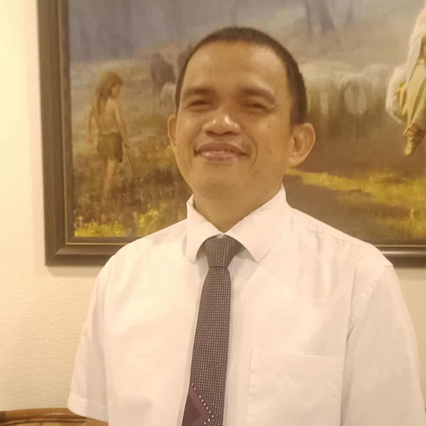

Personal Background of Christopher T. Bahinting
My name is Christopher T. Bahinting, from Lapu-Lapu, Cebu. I'm passionate about web and software development. I earned an Associate degree in Computer Programming in 2004 and I'm currently studying Web and Software Development at BYU-Idaho through BYU Pathway Worldwide. I have previous work experience as an Office Staff, a CAD Operator at the National Power Corporation, and a Graphic Artist at the Energy Development Corporation, where my projects mainly focused on redrawing and updating as-built plans and Office works. I had also an experience in serving as Fulltime Missionary of the Church of Jesus Christ of Latter-day Saints from 2005 to 2007. Also, I had the opportunity to serve as Bishop in our local unit from year 2009 to 2016 and currently serving as Cebu Temple Ordinance Worker. All these experiences had helped me to become a good performer in my job.
Skills
I possess basic proficiency in Python, C#, Node.js and MongoDB as I learned it from my subjects in my course at BYU-Idaho. I also have strong foundational knowledge in HTML, CSS, JavaScript, GitHub, AutoCAD, Graphic Design, and Software and Responsive Web Development fundamentals.
Experiences
As CAD Operator and Graphic Artist, I was responsible for redrawing old as-built plans using AutoCAD and Adobe Photoshop. One of the skills that help me landed the CAD operator job was my knowledge in programming, because during or on year 2003 the CAD was a command based application, No one can draw CAD except someone who has knowledge in coding.
I had also an experience in serving as Fulltime Missionary of the Church of Jesus Christ of Latter-day Saints from 2005 to 2007. Also, I had the opportunity to serve as Bishop in our local unit from year 2009 to 2016 and currently serving as Cebu Temple Ordinance Worker. All these experiences had helped me to become a good performer in my job.
Portfolio
These are the links to my sample projects:
Contact
Email: bahintingchristopher@gmail.com
Mobile Phone: 09128751487
Location: Lapu-Lapu, Cebu